Project 1
Three experiments with one idea underneath: perspective is decided by where the camera stands, not by how far it's zoomed.
Part 1
Both photos are framed so my face fills the same height. The first is at arm's length with the wide lens; the second is from several feet back, zoomed in to match.
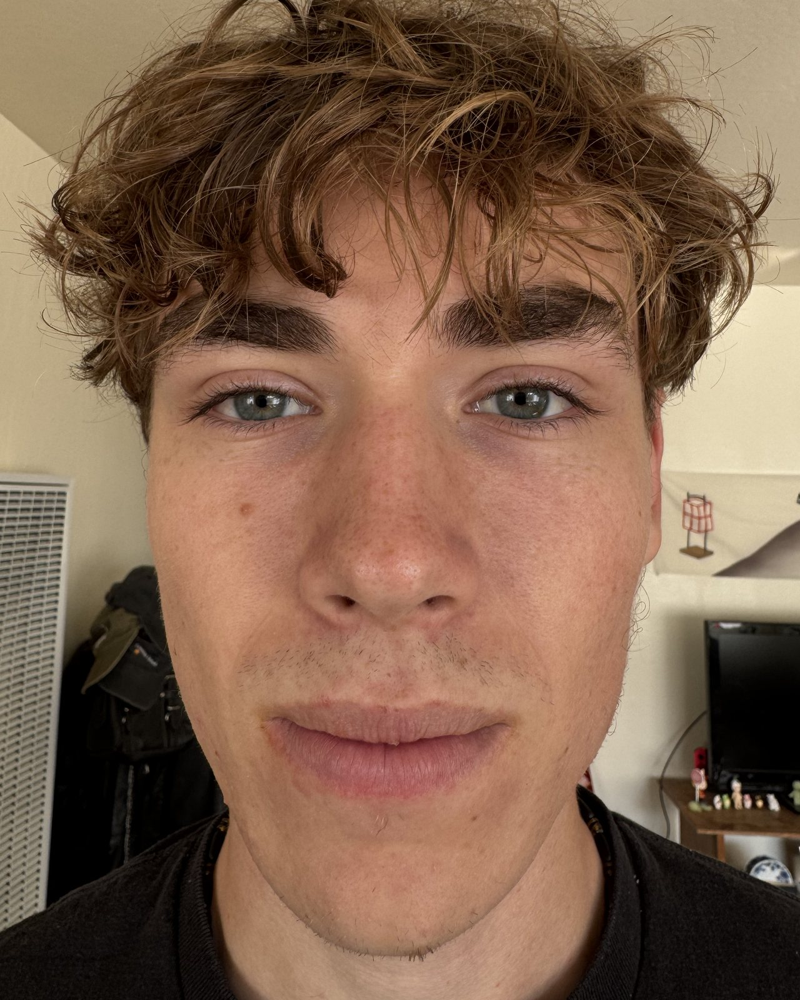
Arm's length, wide lens
Nose pushed forward, cheeks narrowed, ears gone.
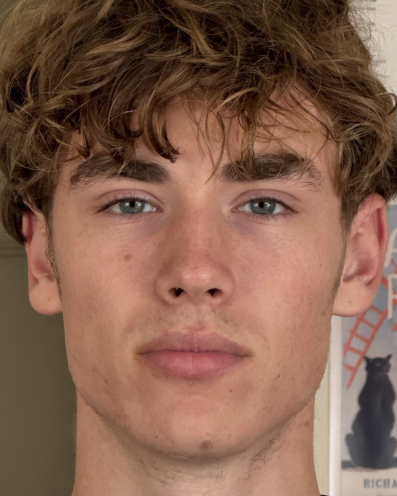
Several feet back, zoomed in
Same face size, true proportions.
Part 2
Same house, same procedure in reverse. The first photo is zoomed in from far down the street; the second is unzoomed from the sidewalk out front, framed so the house is about the same size.
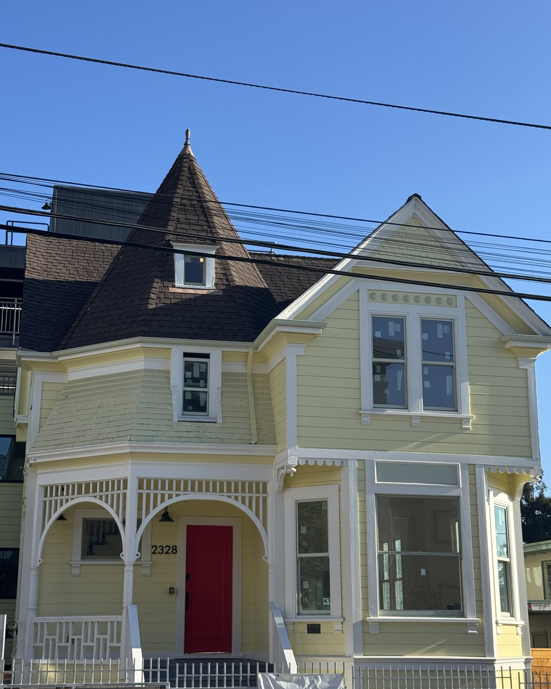
Far away, zoomed in
Flattened: the roofline, porch and the building behind all stack at one depth.
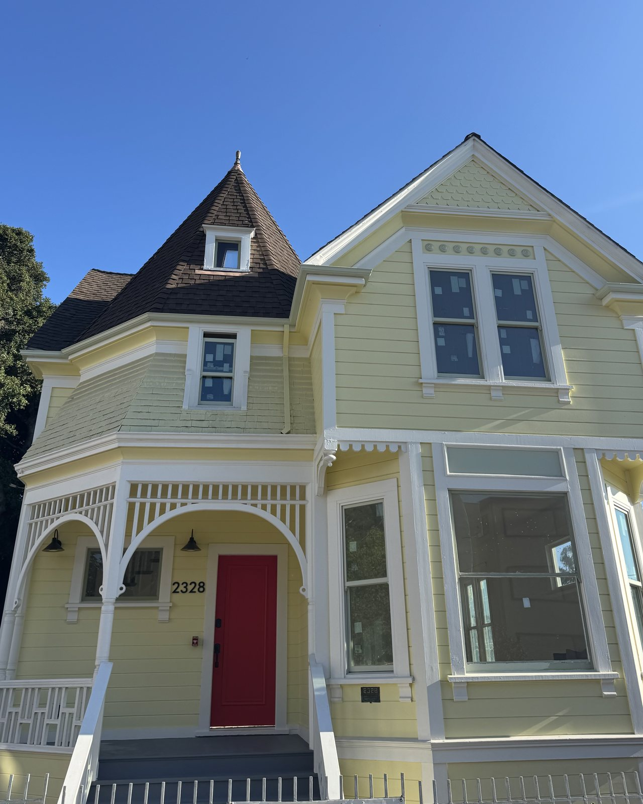
Up close, no zoom
Deep: the porch looms, the turret recedes, the neighbors vanish out of frame.
Part 3
Six stills, stepping the phone backward while zooming in just enough to keep the pot the same size in every frame. Aligned on the pot and stitched into a looping GIF.
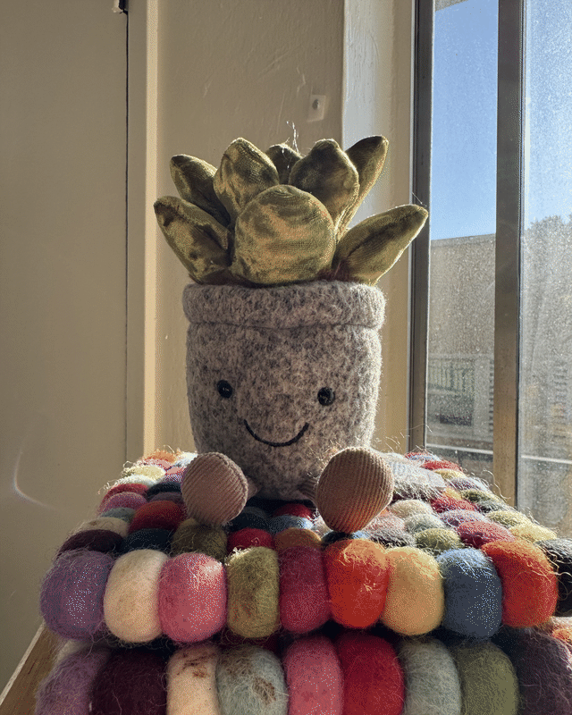
Dolly zoom, looping
The pot never moves. The room does.
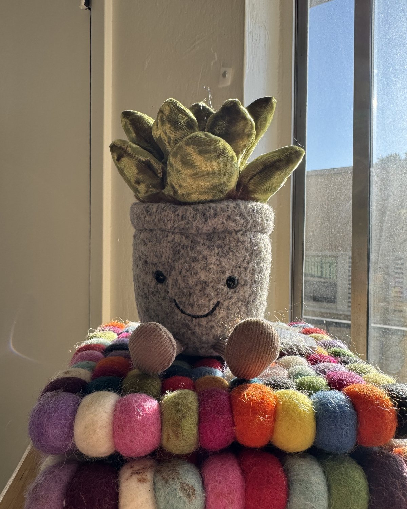
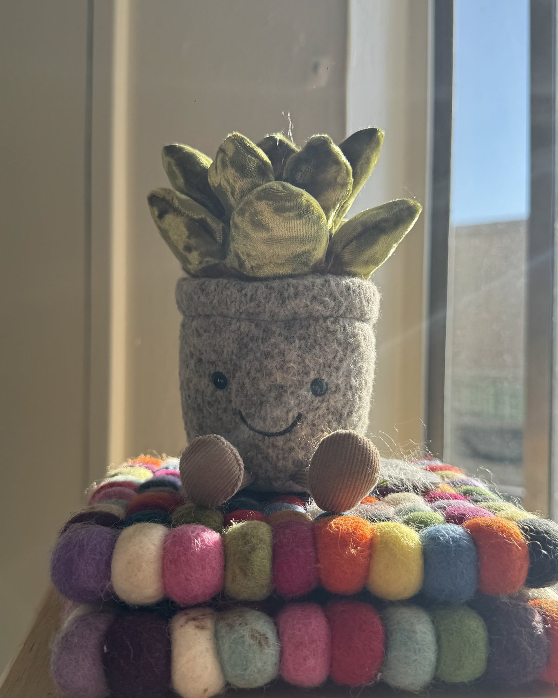
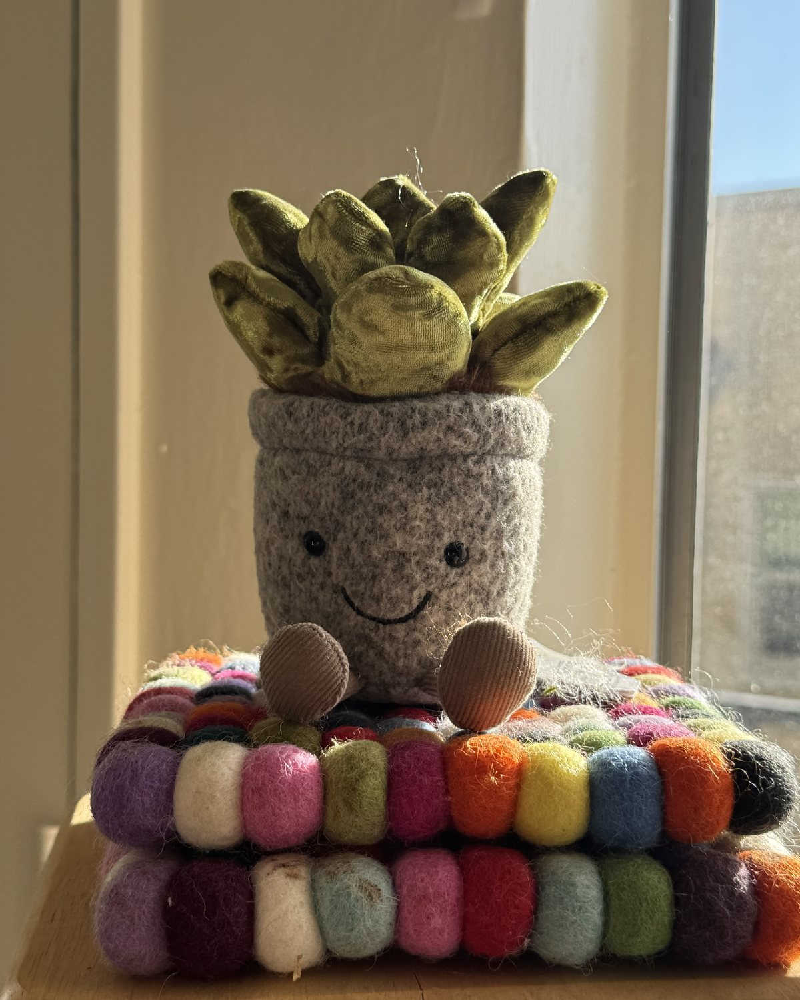
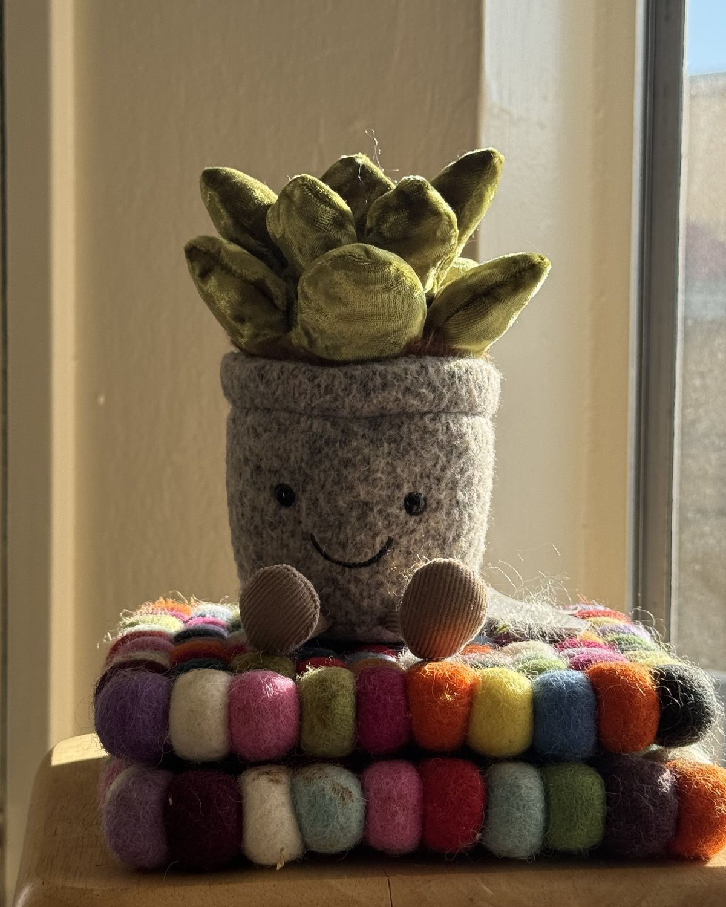
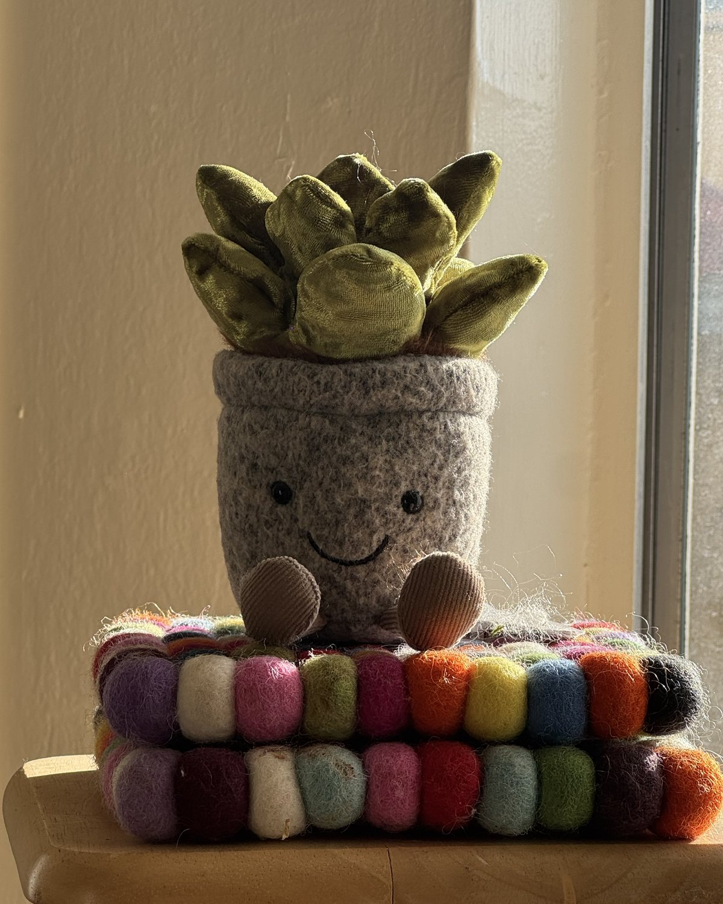
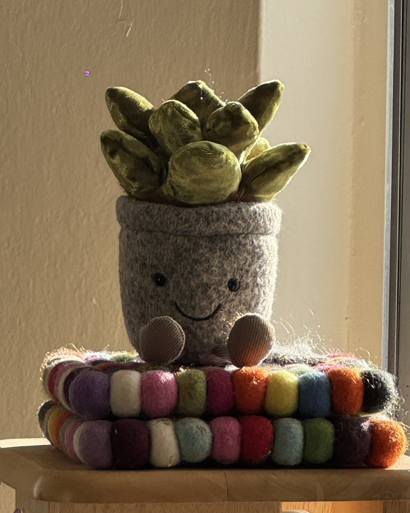